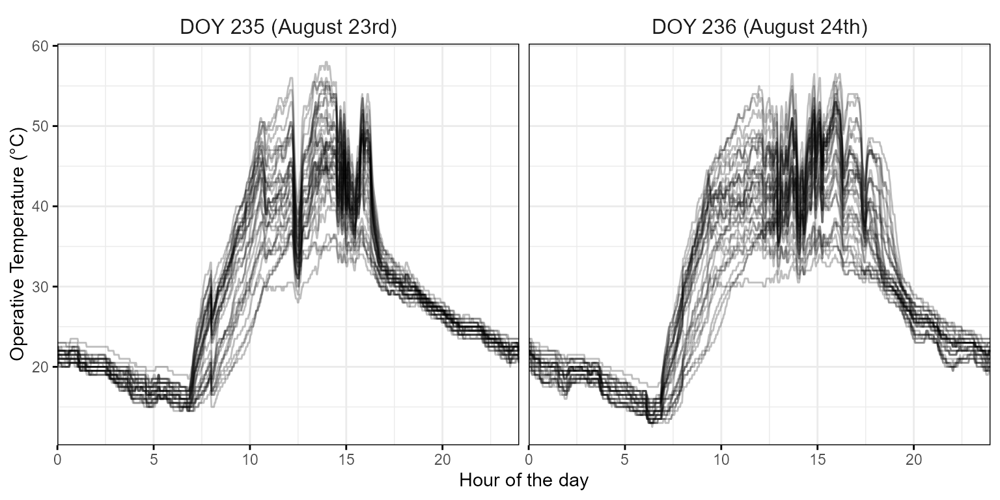
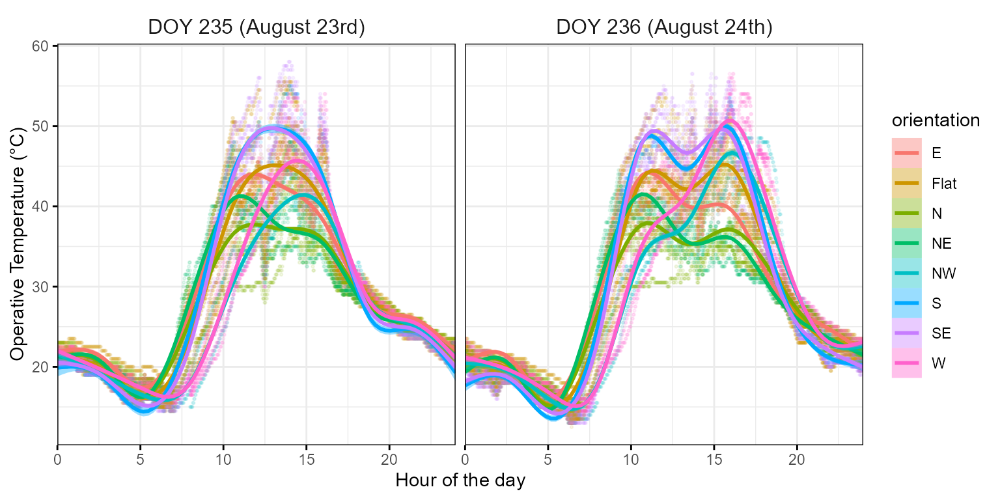
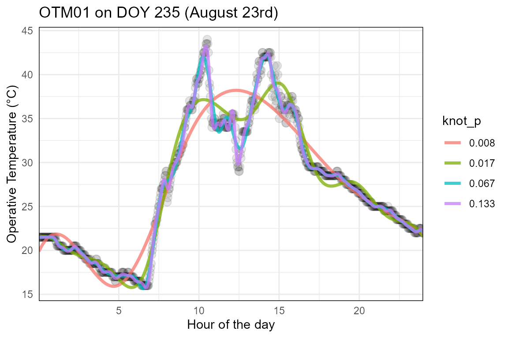

Dealing with OTM data
rnp_otm_data_add_otm_metadata_gen_otm_splines.RmdOverview
The goal of this vignette is to illustrate the process behind the
functions rnp_otm_data, add_otm_metadata and
gen_otm_splines of the throne package. The
first two functions allow for the reading and processing of multiple raw
.csv files with the temperature measurements recorded using
operative temperature models (OTM) to
data frame-like structure in R (i.e., a tibble). The
gen_otm_splines function will then take this processed OTM
data and generate OTM & date specific cubic spline models that
describe the thermal dynamics of each OTM each day. These spline models
will later be used to both correct the flight data and to ultimately
predict thermal landscapes. Below, we highlight the section of the
package’s workflow that is covered in this vignette
Reading and processing raw OTM data
The rnp_otm_data function (i.e., read
and process OTM data) reads a reads
and combines data from a set of raw OTM files (.csv format)
and transforms them into an R tibble. Below we
detail the function’s inputs, processing and outputs.
Inputs
The rnp_otm_data function takes in 4 inputs:
-
folder_path: A character indicating the location where all OTM.csvfiles are stored. -
rows_skip: An integer indicating how many rows should be skipped when reading each.csvfile. -
time_col: An integer indicating the column in all.csvthat corresponds to the time associated with each recording -
op_temp-col: An integer indicating the column in all.csvthat corresponds to the operative temperature measurement.
While the specific way in which of these arguments is used to process
the data will be discussed next, we want to take a second to highlight
the importance of the rows_skip argument here. Including
the it ensures that reading errors will be minimized. For instance, the
software we used to program and download the data recorded in the Eye
Buttons that we house inside the OTMs is OneWire
Viewer returns .csv files with several rows of metadata
on each measurement. These rows lead to an incorrect reading of the raw
data, see below:
otm_34 <- read.csv("data/otm_data/OTM34.csv")## X1.Wire.iButton.Part.Number..DS1921G.F5
## 1 1-Wire/iButton Registration Number: 3300000059DFE621
## 2 Is Mission Active? true
## 3 Mission Start: Thu Aug 24 06:04:00 PDT 2023
## 4 Sample Rate: Every 2 minute(s)
## 5 Number of Mission Samples: 18947
## 6 Total Samples: 89897
## 7 Roll Over Enabled? false
## 8 Roll Over Occurred? Roll over has occurred
## 9 Active Alarms: None fired
## 10 Next Clock Alarm At: Disabled
## 11 High Temperature Alarm: 85 \xb0C
## 12 Low Temperature Alarm: -40 \xb0C
## 13 Date/Time
## 14 Unit
## 15 ValueIn contrast, by skipping precisely 14 rows, we can
access the recordings directly without formatting issues:
read.csv("data/otm_data/OTM34.csv", skip = 14)## Date.Time Unit Value
## 1 8/24/23 6:04:00 AM C 14
## 2 8/24/23 6:06:00 AM C 14
## 3 8/24/23 6:08:00 AM C 14
## 4 8/24/23 6:10:00 AM C 14
## 5 8/24/23 6:12:00 AM C 14
## 6 8/24/23 6:14:00 AM C 14
## 7 8/24/23 6:16:00 AM C 14
## 8 8/24/23 6:18:00 AM C 14
## 9 8/24/23 6:20:00 AM C 14
## 10 8/24/23 6:22:00 AM C 14
## 11 8/24/23 6:24:00 AM C 14
## 12 8/24/23 6:26:00 AM C 14
## 13 8/24/23 6:28:00 AM C 14
## 14 8/24/23 6:30:00 AM C 14
## 15 8/24/23 6:32:00 AM C 14TIP: We recommend that users of the
thronepackage become very familiar with the formatting of the raw OTM data. Specifying therows_skipargument correctly is crucial for the rest of the package’s functions to work properly down the line.
Processing
To transform the raw .csv data into an R
tibble, the rnp_otm_data function will go
through the following general steps for each of the files contained in
the folder specified via the argument folder_path:
- Read each
.csvfile while skipping as many rows as specified within therows_skipargument. - Select the columns for time and operative temperature as specified
by the
time_colandop_temp_colarguments. - Using tools from the
lubridatepackage, extract the year, Julian date and minute of the day for each operative temperature measurement.
NOTE: We choose to use Julian dates and minutes of the day to simplify the management of the data as much as possible. Date and time data have unique data formats in the
Renvironment that are often difficult to handle for users and that might lead to unintended errors. By using Julian dates and minutes of the day, we deal only with integer columns, much easier to operate with and manipulate. Further, these formats can be easily transformed back into more easily interpretable scales for visualization purposes, by using theas.Datefunction to transform Julian dates back into a YYYY-MM-DD format and dividing by 60 for minutes of the day to get hours.
ALSO NOTE: OneWire Viewer, returns
.csvfiles that have a MM/DD/YY HH:MM:SS format. Data in this data format can be translated into a time column using themdy_hmsfunction of thelubridatepackage. Please note that the time column of any raw OTM dataset to be in this format for thernp_otm_datato function correctly.
Outputs
The final output is a tibble object with columns for the
OTM’s identification (otm_id), year, date (Julian date
format), minute of the day (minute) and operative
temperature (op_temp). If the function worked correctly,
the resulting data set should contain all observations made by all OTM
whose files were located in the directory specified via the argument
folder_path. We have included a data set of these
characteristics with 33 OTMs that recorded over a period of 4 days.
Below we present and plot a subset of this data:

Adding OTM metadata
The add_otm_metadata function adds information about the
OTMs to the OTM data frame obtained using the rnp_otm_data
function.The function takes in 2 inputs:
-
otm_data: The OTM data frame obtained using thernp_otm_datafunction -
otm_metadata: An OTM metadata file
As part of the throne package documentation we include
an example metadata file for OTM. Our file contains information on the
latitude, longitude and elevation at which each OTM was deployed as well
as information on the orientation and microhabitat.
head(otm_metadata)## otm_id microhabitat orientation latitude longitude elevation
## 1 OTM01 outcrop N 39.86873 -119.6270 1311.73
## 2 OTM21 outcrop NW 39.86874 -119.6270 1312.04
## 3 OTM07 outcrop E 39.86876 -119.6271 1312.23
## 4 OTM16 outcrop SE 39.86876 -119.6271 1313.17
## 5 OTM17 outcrop Flat 39.86874 -119.6271 1311.31
## 6 OTM28 rock Flat 39.86873 -119.6272 1312.98The add_otm_metadata then simply merges the original OTM
data frame with the OTM metadata by OTM identity. Leading to a data
frame with additional columns:
## otm_id year date minute op_temp microhabitat orientation latitude longitude
## 1 OTM01 2023 234 367 13.5 outcrop N 39.86873 -119.627
## 2 OTM01 2023 234 369 13.5 outcrop N 39.86873 -119.627
## 3 OTM01 2023 234 371 13.5 outcrop N 39.86873 -119.627
## 4 OTM01 2023 234 373 13.5 outcrop N 39.86873 -119.627
## 5 OTM01 2023 234 375 13.5 outcrop N 39.86873 -119.627
## 6 OTM01 2023 234 377 13.5 outcrop N 39.86873 -119.627
## elevation
## 1 1311.73
## 2 1311.73
## 3 1311.73
## 4 1311.73
## 5 1311.73
## 6 1311.73
This makes the add_otm_metadata function extremely
versatile to use as the user can incorporate as much metadata to their
OTMs ad needed (e.g., their size o their color if different OTM shapes
are deployed simultaneously etc.).
Generating OTM spline models
The last step when dealing with OTM data is to fit a cubic smoothing spline model to each individual OTM for each day during it’s deployment in the field. This spline model will capture the thermal dynamics of the OTM throughout a given day. In turn this allows us to predict the temperature the OTM experiences in any moment of the day based on the observations it recorded during that day.
To fit these models the throne package includes the
gen_otm_splines function (Generate
OTM cubic smoothing splines model).
This function takes in an OTM data frame that has been generate via the
rnp_otm_data and add_otm_metadata functions
and returns a complex tibble. This tibble will
include the OTM’s identification and all associated metadata, together
with a nested
column containing the spline model generated via the native
R function smooth.spline. We call this a
complex tibble precisely because of the nesting of the
splines column. The resulting splines tibble
will contain as many rows as combinations of unique otm_id
and date since there will be a spline model for each OTM
every day it was deployed in the field:
## # A tibble: 132 × 6
## otm_id year date latitude longitude splines
## <chr> <dbl> <dbl> <dbl> <dbl> <list>
## 1 OTM01 2023 234 39.9 -120. <smth.spl>
## 2 OTM01 2023 235 39.9 -120. <smth.spl>
## 3 OTM01 2023 236 39.9 -120. <smth.spl>
## 4 OTM01 2023 237 39.9 -120. <smth.spl>
## 5 OTM02 2023 234 39.9 -120. <smth.spl>
## 6 OTM02 2023 235 39.9 -120. <smth.spl>
## 7 OTM02 2023 236 39.9 -120. <smth.spl>
## 8 OTM02 2023 237 39.9 -120. <smth.spl>
## 9 OTM03 2023 234 39.9 -120. <smth.spl>
## 10 OTM03 2023 235 39.9 -120. <smth.spl>
## # ℹ 122 more rowsA critical point for the gen_otm_splines function to
work correctly is determining the appropriate value for the
knot_p argument. This argument determines the percentage of
observations recorded by an OTM in a given day that are used to
determine the number of knots of the smoothing spline model. In short,
the number of knots will ultimately determine the degrees of freedom of
the model as \(df = degree + k\) and
\(degree = 3\) for cubic splines. (see
here
for further details). The number of degrees of freedom will then
determine the “wiggliness” of the resulting model, in other words, the
number of times the resulting curve will change direction. As an
example, below we plot different spline models for the same data using
different knot_p parameter specifications.

The decision on which knot_p value to use is dependent
on two things. First is the frequency at which the OTM itself is
recording. We can extrapolate how many knots/day (or knots/h)
we would get based on the frequency of recordings and the
knot_p value according to the formula:
\[ Knot/h = Recordings/h \cdot knot_p\]
For instance, the OTMs we used here were programmed to record a
temperature measurement every 2 minutes, leading to a total of 30
observations per OTM/hour. Assuming a knot_p = 0.1 that
would indicate that our model has 3 knots / h.
The second issue that determines the value of knot_p is
the study organism of the user of this R package. Generally
OTMs will equilibrate to the environmental temperature much faster than
the organism they represent with this difference in equilibration time
being positively correlated to the mass of the organism due to thermal
inertia. In other words, the body temperature of an organism that has a
lot of thermal inertia will not be exactly that of the OTM.
(Need some more work on this)